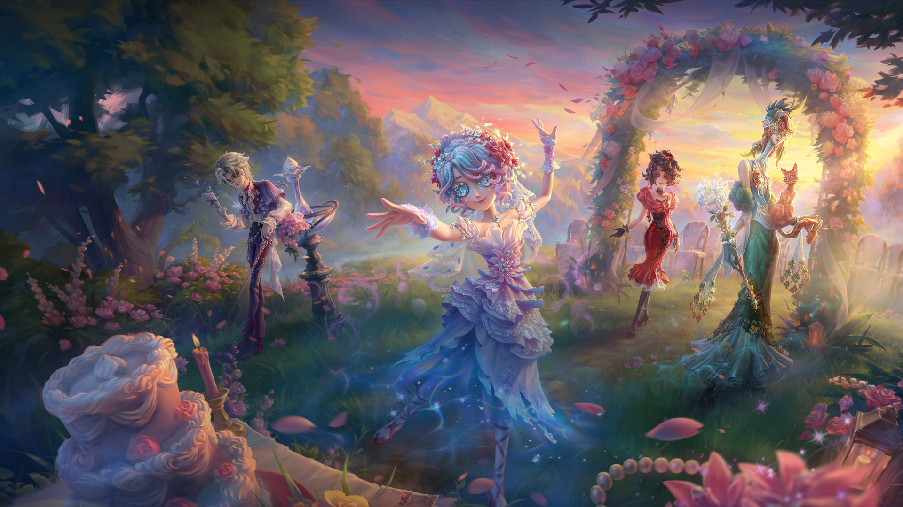
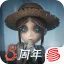

在暮色与花影之间，翻开盛夏的一页。
设计推演 · 下方为历史活动素材展示，非当前活动公告花饰边框、粉紫色的柔和表面，与暖金细节一起，承接主视觉里的花园气氛。
官方素材 · 组合方式未验证
图片内的时间、福利与活动文字来自历史归档，不代表当前有效。
全屏插画、居中的艺术字、装饰性导航选中底图，以及首页导航的局部文字颜色。图片均为已归档原素材，没有使用来源截图拼成页面。
花园来信栏目、卡片组合、按钮渐变、收藏反馈、弹窗与移动端重排均是本次设计。新增文案为 Demo 文案，未宣称来自官网。
其他官网栏目、真实活动流程、官方移动端布局及实际品牌字体尚未验证。本页使用系统字体；样式已提取为候选品牌包。本页仍为原生 HTML，DangoUI 按钮接线另见组件预览；完整品牌认证未通过。